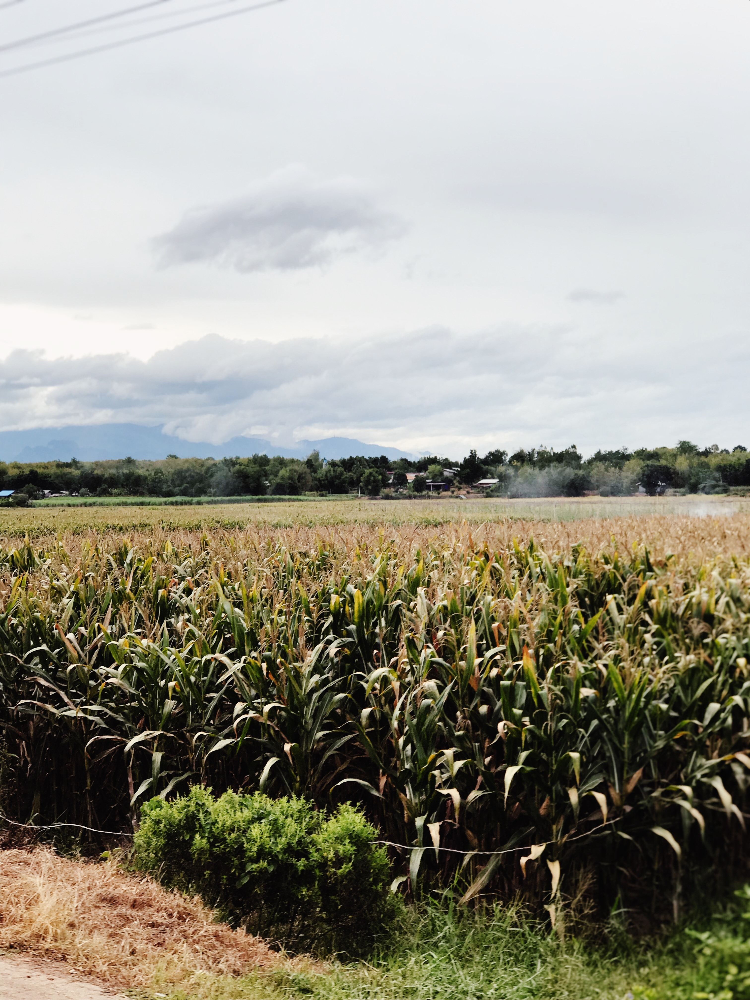

About Sugarcane
Sugarcane is a tall, tropical grass that is cultivated for its sweet juice. It is a primary source of sugar production globally. In addition to sugar, sugarcane is used to make molasses, rum, and ethanol. Sugarcane cultivation has a long history and plays a vital role in the economy of many countries.
Steps to Grow Sugarcane
- Choose a sunny location with well-drained soil for sugarcane cultivation.
- Obtain healthy sugarcane stalks or setts for planting.
- Plant the setts in furrows or pits, ensuring proper spacing between plants.
- Water the sugarcane consistently, especially during the growing season.
- Apply fertilizers rich in nitrogen, phosphorus, and potassium to support growth.
- Control weeds and pests through regular monitoring and appropriate measures.
- Harvest sugarcane when it reaches maturity, typically after 10 to 24 months.
Extra Information
Sugarcane is not only a source of sugar but also contributes to various industries. It has cultural significance and is used in traditional ceremonies and celebrations. Sugarcane is an energy-rich crop and is increasingly used in the production of biofuels. Explore the diverse uses and economic importance of sugarcane.